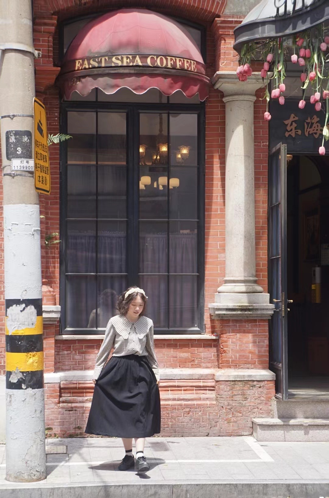
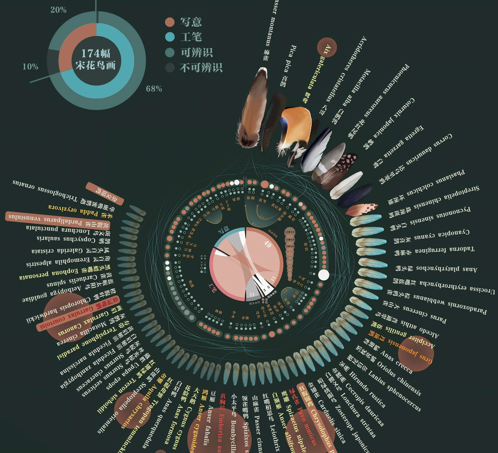

DESIGN
education: 浙江大学艺术与科技2201 birthday: 2004.04
mbti: INTJ hobby: 网球 音乐 阅读
我的名字“朱可文”并不仅仅是一个符号，更提醒我应该成为一个什么样的人。“朱尔不群”，在学习和工作中我始终秉持这种追求卓越的精神，在长期的合作与实践中逐步成长为值得信赖的“可靠之才”，而我的人生目标是努力成为“文质彬彬”德才兼备、内外兼修的人。
技能特长
After Effects87%
C4D/Blender96%
Figma77%
MY LIFE
I strive to enjoy life. : )
MY PROGRAM
I pursue art that is unintentionally 'perfect'. : )
《对宋代花鸟画的穷尽式数据分析》
搜集艺术、科学多领域数据，分析后制作信息可视化图
了解更多利用AI生成千张图像，制作概念视频
了解更多


联系方式
欢迎所有人的联系。
I look forward to and welcome all friends from different fields and identities to contact me, regardless of the purpose.